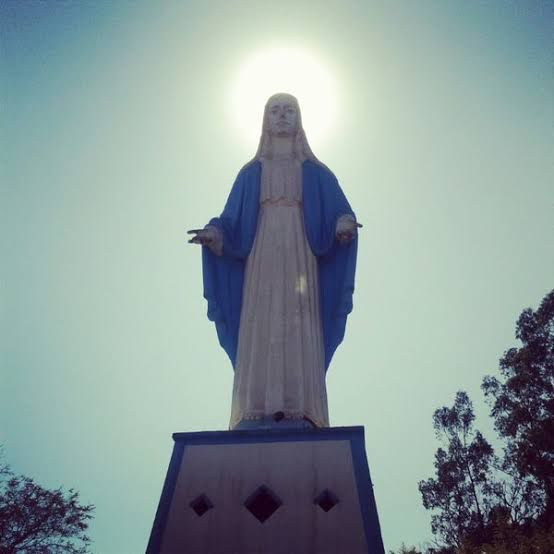

- Casa da Cultura(Fundação Edgard e Egas Andrade Gomes).
- Museu Casa Dei Nonni.
- Casa da Fazenda Florestal.
- Parque Aquático de Irati.

O mirante do monumento em homenagem a Nossa Senhora das Graças é um dos pontos turísticos mais visitados no município.
A estátua, com 22 metros de altura, é uma das maiores dedicada à Nossa Senhora das Graças. Começou a ser construída em 1957, em comemoração ao aniversário de 50 anos do município.
Nos dias festivos e especiais do calendário católico a capela recebe celebrações, missas e novenas. Além da capela e do mirante, o espaço possui estacionamento, uma escadaria de acesso e um bosque.
